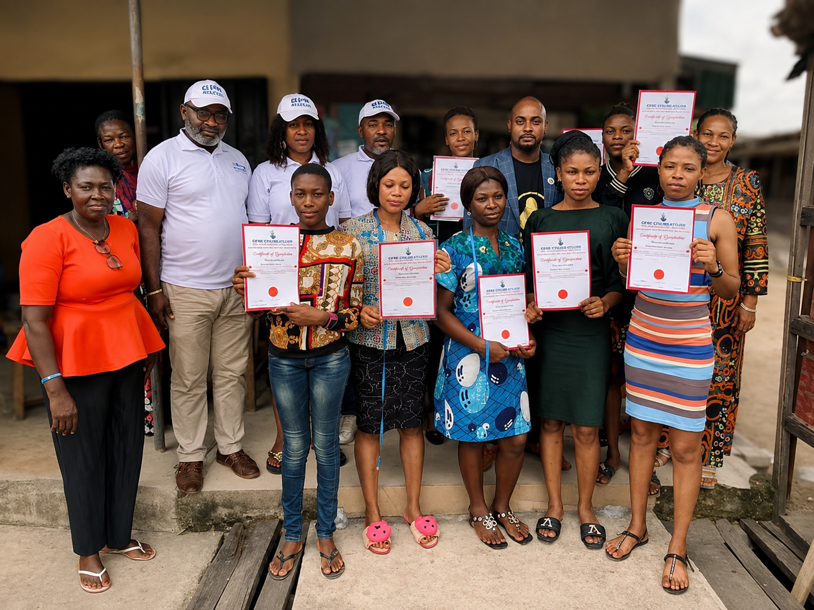
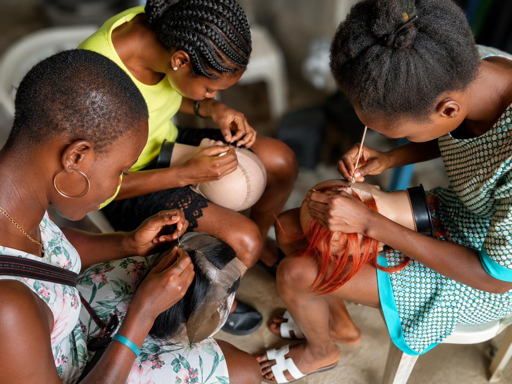
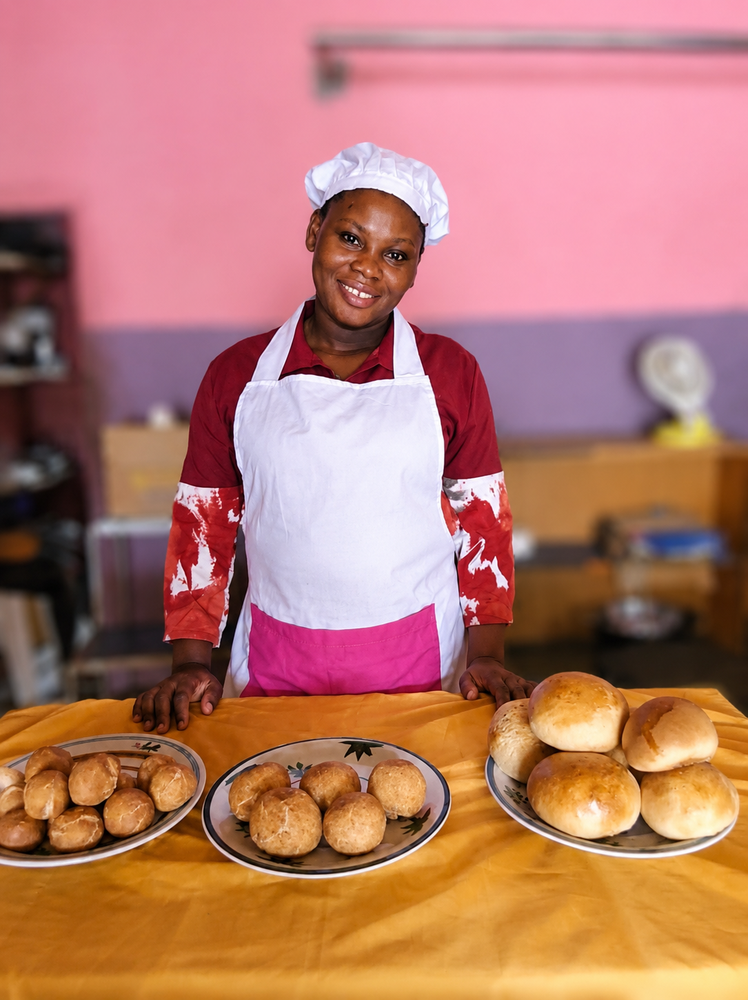
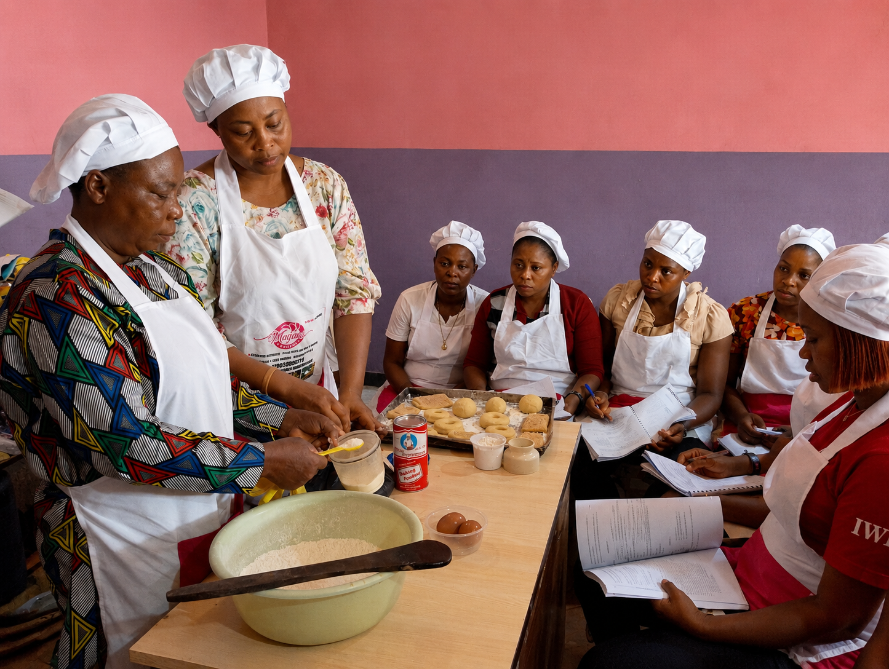
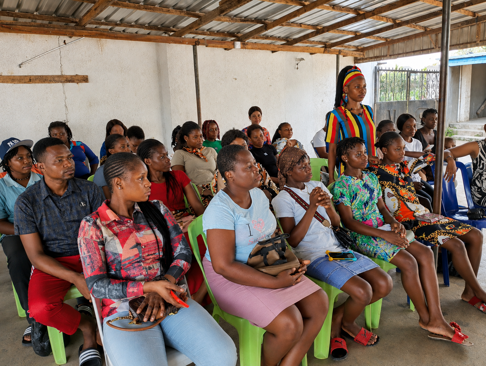
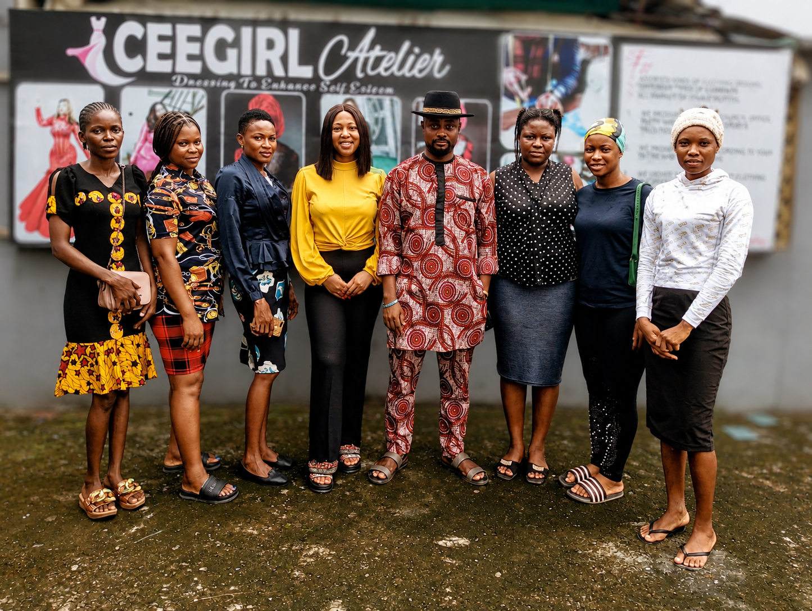
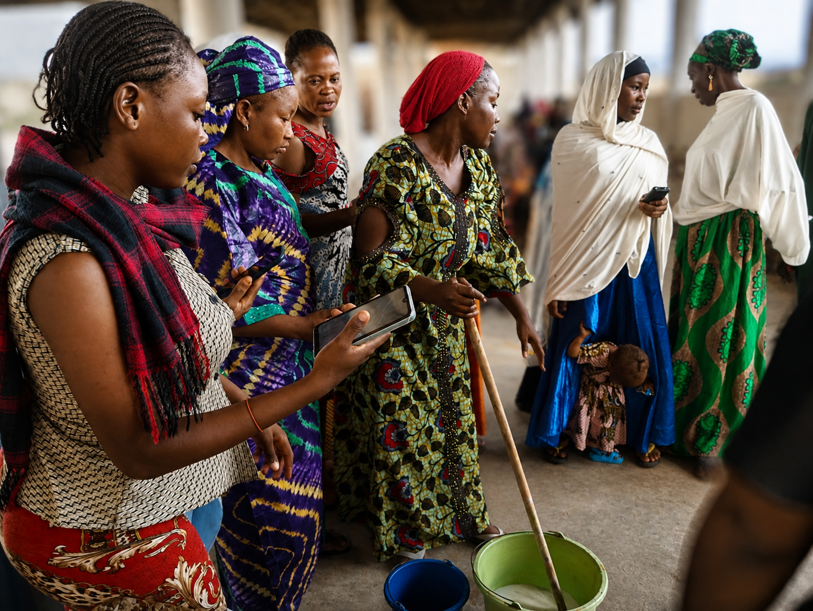
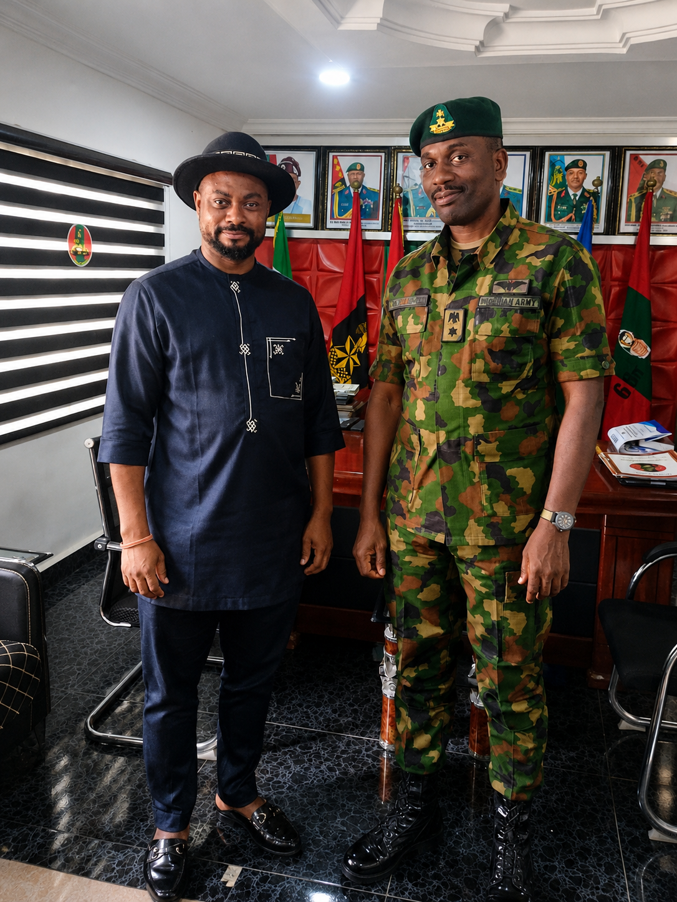
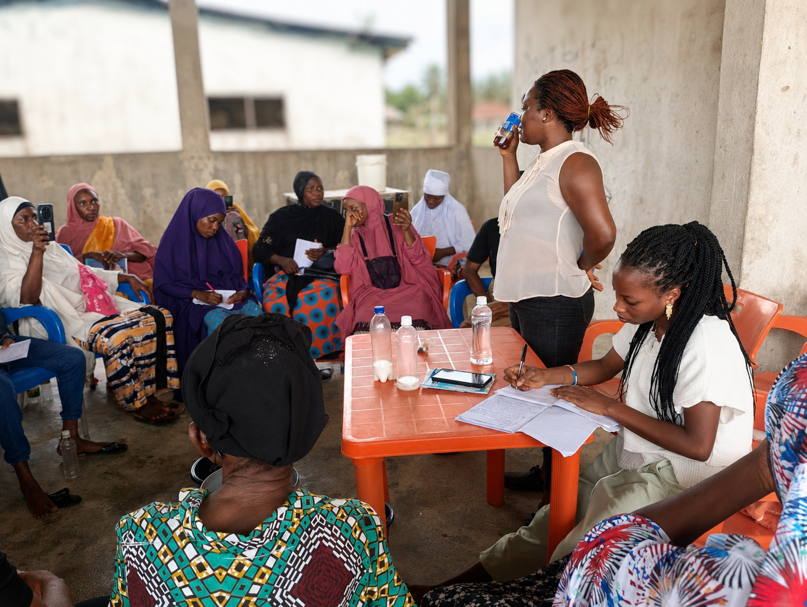

Training & Community Gallery
Browse the wider collection of training, skills acquisition, humanitarian outreach and community activity photographs. These photos are separate from the special Featured Photos selected for the homepage.








